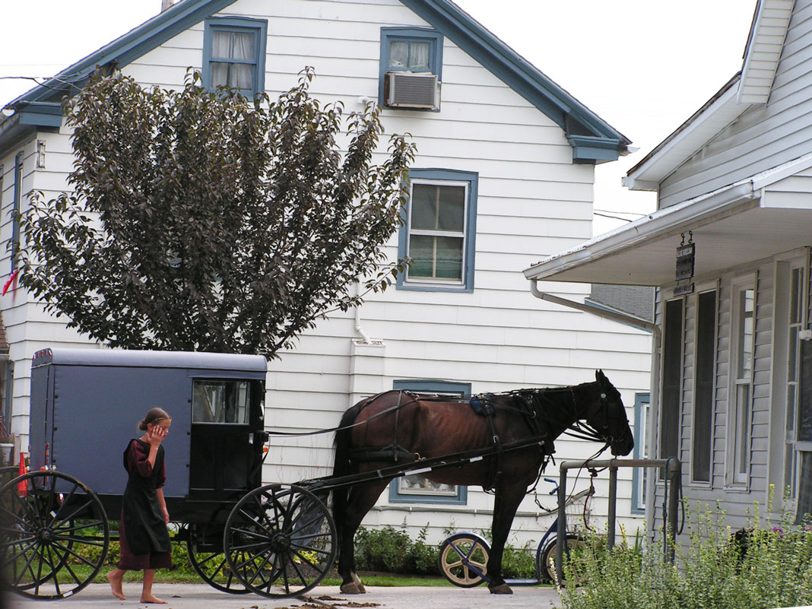

NEWS WORTHY - Amish School Shooting
School Shooting in an Amish One-Room School
October 2nd, 2006. It was a typical fall day. Birds could be heard in the distance and little else, except maybe the clip-clop of a horse’s hoofs and the rattling of a buggy heading down a back country road. It’s normally quiet and peaceful in the rolling Amish farmlands of Lancaster County, Pennsylvania. But that peace was shattered when the sound of gunfire was heard from inside an Amish school. When local police broke into the one-room Amish schoolhouse they found 10 Amish girls ages 6-13 had been shot by Charles Carl Roberts IV, who had then committed suicide. School shootings are a far too frequent occurrence in this country. But this case openly displayed a clash of two different cultures – the modern, more “advanced” American society and the withdrawn community of the Amish, who intentionally attempt to distance themselves from worldly influences. The violence that is far too common in one society blasted its way into the non-violent, peaceful community of “the gentle people”. The shooting took place at the West Nickel Mines Amish School, located about 12 miles southeast of Lancaster City. Nickel Mines is just a crossroads within Bart Township, a local municipality with a population of roughly 3,000 Amish and English (the Amish term for the non-Amish). The school was a typical Amish one-room school with a school bell on the roof, two outhouses, a ball field, and an enclosed schoolyard. It was built in 1976. On the blackboard was a sign with a teddy bear. The sign read “Visitors Bubble Up Our Days”. Twenty-six children, ages 6-13, from three different local Amish church districts attended this school. Charlie Roberts was a milk truck driver who serviced the local community, including the farms of some of the victims’ families. Nine years earlier his wife Amy gave birth to their first child, a baby girl. However, the baby died after living only 20 minutes. Apparently his daughter’s death affected him greatly. He never forgave God for her death, and eventually planned to get revenge. On the morning of October 2nd Roberts said goodbye to two of his own children at the school bus stop, then drove to the West Nickel Mines Amish School. When he walked in the door, some of the children recognized him. That day the school had four adult visitors – the teacher’s mother, her sister, and two sisters-in-law. One of the women was pregnant. When the young teacher saw his guns, she and her mother left the other adults with the children and ran to a nearby house for help. A call was made to 911. The pregnant visitor was trying to comfort 7-year old Naomi Rose when Roberts ordered the adults to leave. Then he told the boys to leave. The boys huddled near an outhouse to pray. Roberts had the 10 girls lie down facing the blackboard and he tied their hands and feet. Roberts told the girls he was sorry for what he was about to do, but “I’m angry at God and I need to punish some Christian girls to get even with him.” When the state police arrived, Roberts ordered them to leave the property or he would shoot. He told the girls, “I’m going to make you pay for my daughter.” One of the girls, 13-year old Marian, said, “Shoot me first.” Roberts began shooting each of the girls before finally shooting himself. When the police broke in to the school, two of the girls, including Marian, were dead. Naomi Rose died in the arms of a state trooper. Emergency personnel arrived quickly, and helicopters flew the wounded to hospitals in Lancaster, Hershey, Reading, and Delaware. Two sisters died later that night in two different area hospitals. Amish parents tried to console themselves by saying the five girls who had died were “safe in the arms of Jesus.”
Community Response to this Amish Tragedy
Word about the shooting spread quickly throughout the Amish community. The shooting was reported on local television stations, and was soon picked up by the national media. Reporters, photographers, and video crews invaded this rural countryside to report this story around the world. While the Amish community strives to avoid publicity, this tragic event thrust their community in front of a worldwide audience. The Amish were obviously shocked by this incident and they collectively grieved for the children and their families. But that shock extended far beyond just the Amish. This tragedy rocked all of Lancaster County. The day after the shooting, 1600 gathered for a prayer service at one local church, while hundreds more met at other churches for prayer. All Lancaster County shared in the horror and grief of this tragedy. As one Amishman said, “Today, we’re all Amish.” Some individuals and organizations hosted barbecues and other events to raise financial support for the victims’ funds. Over 3,000 motorcyclists rode together from nearby Chester County to Lancaster in a procession over 12 miles long. They raised over $30,000 in support. A number of funds were set up to accept donations for the families of the Amish girls who were shot, and for Roberts’ wife and three young children. Donations and sympathy flowed in not only from Lancaster County but from across the county and around the world. For months volunteers met at the Bart Twp. Firehouse to sort through thousands of cards, letters, teddy bears, and other gifts from around the world. Some were addressed simply to “Amish Families, USA”. In all, over four million dollars was raised in support of the families.
The Amish Respond With Forgiveness
The horror of this school shooting was the story the reporters came to tell about. However, in the hours and days following the shooting another story developed that also caught the world’s attention – the story of Amish grace and forgiveness. In the midst of their grief over this shocking loss, the Amish community didn’t cast blame, they didn’t point fingers, they didn’t hold a press conference with attorneys at their sides. Instead, they reached out with grace and compassion toward the killer’s family. The afternoon of the shooting an Amish grandfather of one of the girls who was killed expressed forgiveness toward the killer, Charles Roberts. That same day Amish neighbors visited the Roberts family to comfort them in their sorrow and pain. Later that week the Roberts family was invited to the funeral of one of the Amish girls who had been killed. And Amish mourners outnumbered the non-Amish at Charles Roberts’ funeral. It’s ironic that the killer was tormented for nine years by the pre-mature death of his young daughter. He never forgave God for her death. Yet, after he cold-bloodedly shot 10 innocent Amish school girls, the Amish almost immediately forgave him and showed compassion toward his family. In a world at war and in a society that often points fingers and blames others, this reaction was unheard of. Many reporters and interested followers of the story asked, “How could they forgive such a terrible, unprovoked act of violence against innocent lives?”
Amish women of the Pennsylvania Dutch Country have been creating exquisite Amish quilts since the mid-1800’s (and some believe even earlier). Amish quilts are an expression of frugality. They not only serve a practical, functional purpose, but serve as a form of entertainment as well. Many times groups of Amish and Mennonite women gather for a quilting bee. The bee is a form of socialization and relaxation for these women. It’s a time when they can get together to visit and “catch up” with one another once their household duties have been completed. More recently, this social gathering has turned into a business enterprise for many Plain women. Cottage quilt industries are springing up throughout Lancaster County. Many Amish and Mennonite women have opened up small shops in their homes to subsidize the family’s income. A handmade sign, stating simply, “Quilts sold here. No Sunday sales” announces that fact. There are a couple large quilting events that take place in the Lancaster County area each year. These events includes classes and seminars on quilt-making, the history of quilts, and numerous displays of quilted products and quilting supplies. Plus, quilts are a popular sales items at the popular Mud Sales throughout Lancaster. See our Lancaster Events Calendar for more details. For quilt-making supplies, see our Fabric Shops & Quilting Supplies page.
The Quality of Lancaster PA Furniture is Built In
Lancaster has many fine retailers who offer their customers the finest quality furniture, including Amish furniture. You’ll find furniture you can take right off the floor today, or you can order custom-made furniture crafted to your exact specifications. Check with these furniture retailers below to find the furniture you want.